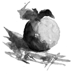

Frågorna att ställa inför en extranet-satsning! | |||
 | |||
Strategic Development AB | |||
Adress http://www.netg.se/~kerfor/conferator_mar98.htm
| |||
Vi läser senaste press-releaserna, både egna och
konkurrenters
Publicering; "alla" kan, oberoende av tid och plats,
ta del av senaste nytt
"One-to-Nobody"
Vi läser senaste versionen av OH-bilderna med företagspresentationen
Tillgänglighet; "alla anställda" har informationen
tillgänglig som förut skickades ut i organisationen
"One-to-Many"
Karin, hos en av våra återförsäljare,
hämtar senaste produkt informationen
Åtkomst; "medlemmar" i en grupp, projekt,
nätverk etc. har information tillgänglig som förut
skickades ut
"One-to-Them"
Erik, hos en av våra stora kunder, når service-uppgifterna
för just deras produkter
Anpassning; "unik medlem" får tillgång
till specifik information
"One-to-One"
Per, Anna och Sven, i en av användargrupperna, deltar
i en diskussion om den nya versionen
Diskussion; "unik medlema" bidrar var och en i en
diskussion med sina inlägg och svar
"Community"
Bill, som sitter hos vår partner i Boston kompletterar
ritningarna och projekt-logg:en
Gemensam; "unika medlemmarna" i gruppen, projektet
etc. arbetar med samma information
"We together"
Från att publicera offentlig information till anonyma läsare, till att gemesamt arbeta med hemlig information i en grupp med unika medlemmar. Möjligheterna som öppnas med internet-baserad teknik är lockande. Teknik-utmaningarna är stora men frågorna kring hur vi egentligen ska använda detta på ett bra sätt än större: Vad, Vem och När?
-Vilka personer hos leverantören skall ha tillgång
till ritningarna? Vem hanterar behörigheten när någon
slutar?
-Vad i projektprotokollet är öppen information även
för våra samarbetspartner?
-Hur ska vi enkelt och säkert kunna ändra säkerhets-klassningen
från intern till öppen information på hundratals
dokument när den nya modellen lanseras?
Frågorna ovan är inte lätta att besvara i stora organisationer. Projektledare och avdelningschefer måste ofta fatta beslut på operativ nivå om vilken information man skall dela med sig av utan någon genomtänkt strategi. Effekten blir att några stänger stenhårt på vissa ställen och andra öppnar för vid dörr någon annanstans.
Säkerhetsadministration och behörighetsregistrering har successivt vuxit till egna funktioner med förgreningar över hela företaget för att kunna förse medarbetare med tillgång till rätt datasystem, viktiga transaktioner och aktuella datatabeller i sitt dagliga arbete. Behörighetssystem har utvecklats per hårdvaruplattform, för olika operativsystem och databaser. Varje standardpaket och generell programvara med självaktning har sin egen användarregistrering. Olika funktioner i företagen har utvecklat sina egna tillämpningar och rutiner för att kunna ge tillgång till "sin" information för produktutvecklingen, produktionen och eftermarknaden.
I och med Intranät:ens utbredning i stora organisationerna har den gemensamma informationen blivit tillgänglig på ett sätt som vi inte varit vana vid tidigare. Information som ofta tagits fram och lagrats med hjälp av office-verktyg istället för traditionella data-system. Information som tidigare ofta bara spreds på papper. Information som antingen var till för alla anställda eller som skickades till namngivna personer och som man därmed uppfattade att man hade god "behörighetskontroll" av. Arbetet med att hålla denna potentiella "informations-sophög" aktuell och tillgänglig för rätt personer kräver att varje dokument ägs av någon person. Alltså ytterligare behov av att knyta behörighetsinformation mellan informationsmängder och användare.
Att etablera en gemensam informationsyta för ett projekt med personer från olika delar av företaget har ofta krävt mycket arbete, saknats riktlinjer och inneburit osäkerhet. Att dessutom hantera åtkomst för personer från andra organisationer kan rent av ha varit omöjligt.
Processorientering och tvärfunktionella team innebär att vi behöver dela information och tjänster över gränser inom företaget. I praktiken har detta inneburit att antalet användaridentiteter att hålla ordning på flerdubblats för många medarbetare. För att inte prata om att problemet med att lära sig ett antal nya applikationer och försöka förstå hur informationen är organiserad när vi väl fått våra behörigheter.
Den administrativa bördan att upprätthålla aktuell informationen om behörigheter per informationsmängd och användare riskerar bli en näst intill hopplös "många-till-många-röra".
Vi har hittills fokuserat på användningen av informations tekniken (IT) för att bättre kunna hantera den viktigaste information. Det är inte längre tillräckligt. Nu gäller det att använda IT på ett intelligent sätt för att bättre kunna hantera och utveckla de viktigaste relationerna. Relationer till anställda, viktiga kunder, potentiella kunder, utvecklingspartner, underleverantörer. Vilka relationer är viktiga? Vilka företag, organisationer och personer? Vad är viktigt i dessa relationer? Vilken information behöver vi gemensamt för att uppnå målen?
Frågorna ovan är ofta inte uppe på dagordningen på rätt nivåer. Idag finns ofta ett "ingenmansland" i stora organisationer mellan de som drar ut de strategiska linjerna för att utveckla relationerna och de som i sitt dagliga arbete skall arbeta tillsammans och de som skall administrera behörigheter. Man har ofta definierat problemet som ett rent datatekniskt problem; säkra protokoll, personliga dosor, firewall konfiguration, med mera. Mycket av tekniken är fortfarande inte tillräckligt bra, men under tiden som den nu mycket snabbt utvecklas kan arbetet starta med att fylla "ingemanslandet". Detta genom att runt om i företagen diskutera relationer, klassificera sina leverantörer och kunder, se över behörighetsrutiner och behörighetsystem, förenkla rutinerna för att snabbt kunna etablera projekt och tvärfunktionella team, i nya samarbetsprojekt diskutera frågorna om vad, vem och när.
Nya roller och funktioner kommer att behöva etableras. Kanske heter de; Relationship Management, Community Manager, Common Spaces Coordinator, eller något annat lika svårt att översätta. Ord som vi behöver ge en gemensam innebörd på alla nivåer i våra organisationer.
Nedan ett försök att sammanfatta diskussionen ovan: från information till relation, men också från frågeställningar kring teknik till att också ta tag i frågeställningarna i verksamhet.
| Information Typ? | Relation Varför? | Teknik Hur? | Verksamhet Vem? Vad? När? |
| Publicering | "One-to-Nobody" | Extern web-server, Internet-koppling, Web-master | Informations-avdelningen: Alla, Öppen info, givna "releaser" |
| Tillgänglighet | "One-to-Many" | Interna web-servrar, TCP/IP Intranet | Informations-avdelningen; Anställda, Företagsintern, ?? |
| Åtkomst | "One-to-Them" | Identifiering, Extranet-"zon" | "Centrala" beslut: Grupp-Behörigheter, Färdig dokumentation, Givna "releaser" |
| Anpassning | "One-to- One" | Identifiering, Databas-kopplingar, Extranet = "vägen" in i applikationer/data baserna | "Affärsdrivna" beslut: Individ-behörighet, Ladda produkten med info-värde, Kontinuerligt |
| Diskussion | "Community" | ?? | ?? |
| Gemensam | "We together" | Identifiering, Authentifiering, Extranet = Intranet/Intranet koppling, Version/Status-hantering | "Processdrivna" beslut: Individ-behörighet, Det som man "behöver", Kontinuerligt |
Denna sammanfattning bygger dels på mina erfarenheter från arbete med internet- och extranet-projekt inom Volvo-koncernen, dels att jag intresserat följt hur begreppet Extranet vuxit fram. Jag har under snart ett år sammanställt ett antal länkar och citat under rubriken: Extranet - a reference page. Finns tillgänglig på http://www.netg.se/~kerfor/extranet.htm.
Tillbaka till Extranet - referenser på svenska